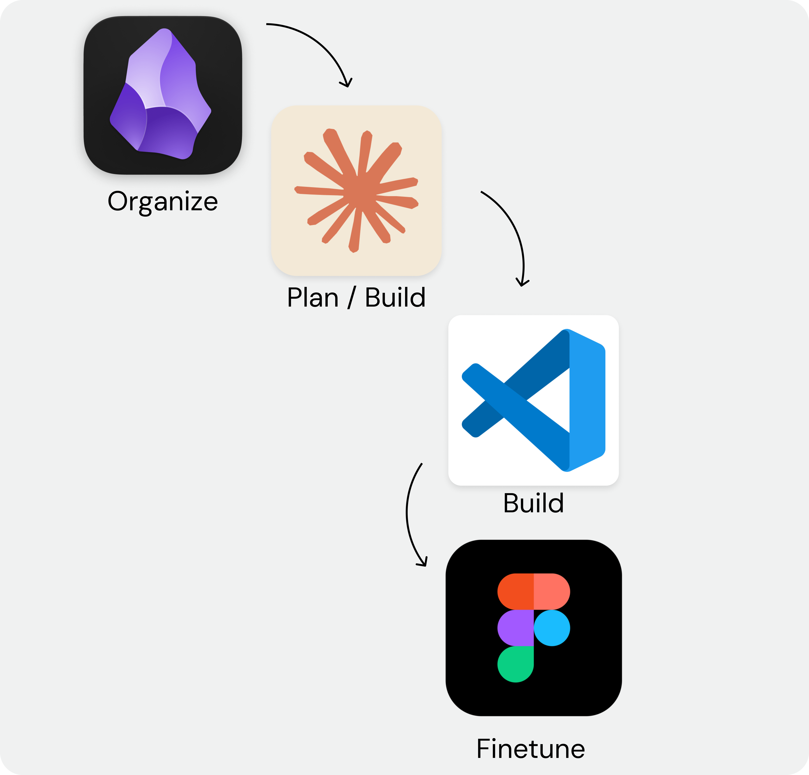
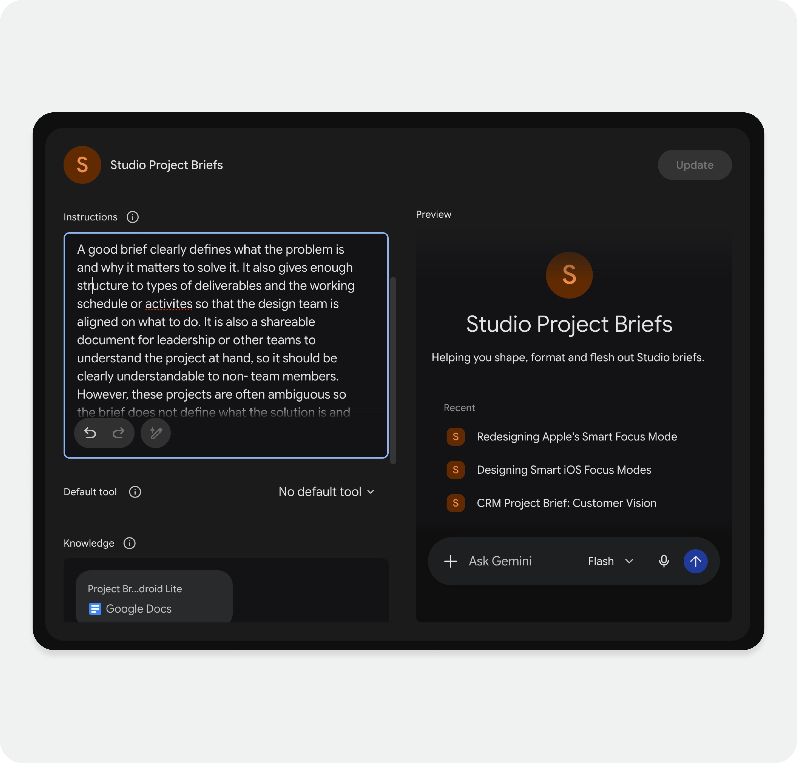

Perspective
Design × AI
AI changes who can build. It doesn't change what's worth building. The barrier to execution has dropped — which means the bar for strategic clarity has gone up. The teams that win won't be the ones moving fastest. They'll be the ones who stay clearest on what they're building, and why.
AI is changing design fast. What follows is how we're getting started.
01 — Building with AI
Designing in AI
How designers work with code keeps evolving, this is just the latest iteration. My teams at Zalando work in a Claude Code × VS Code × Obsidian workflow we've built and refined ourselves. Obsidian is where we own the process end to end: project set-up, agent types, ways of working. Claude Code is the company's tool of choice, and VS Code is how engineering wants our work pushed to GitHub.
AI shows up in design explorations, in prototypes that hold up in real user research and internal conversations, and in code we're already shipping to internal-facing products. AI isn't replacing craft, critical thinking or judgement, but it does mean spending less time explaining an idea and more time finding out whether it actually works.
What's working
-
·
Designers building and shipping prototypes directly
-
·
AI confidence growing across the team
-
·
Our AI design system gives everyone a shared language
-
·
Already shipping in internal tools and B2B products
What we're solving
-
·
Individual workflows are solved — team workflows aren't
-
·
Merging parallel work without breaking each other's code
-
·
Engineering collaboration workflow for merging to the customer facing app

02 — Research
Research in AI
When teams turn to synthetic users in their research process, it's not because users don't matter. It's because they haven't figured out a process that makes it time effective to talk to them. The user's voice is essential, and it isn't replaceable, so instead of replacing research, we used AI to strip out the friction around it while protecting what actually matters. As a research team, we've rebuilt the entire process from the ground up. We're launching more research, with a smaller team, in less time than before. Our AI research repository makes past insights easy to find and genuinely usable, so they drive more decisions instead of sitting in a deck no one reopens.
What's working
-
·
Custom AI tooling guides any team member through methodology selection, setup, screener writing, and recruitment
-
·
A Claude Code workflow handles cleaning, analysis, and synthesis
-
·
Outputs live in our internal research LLM — findable and shareable, not buried in a doc no one reads
Where we won't go
-
·
Synthetic users — not because the data can't be accurate, but because you lose the discomfort
-
·
Real research forces you to face things you didn't expect. Synthetic data lets you confirm what you already believe
-
·
That's not research. That's expensive confirmation bias

03 — Evolving the culture
Upskilling the Design Community
At Zalando design, we have the AI-obsessed, the AI-terrified, and everyone in between. That gap was widening faster than organic learning could close it, and hoping people would figure it out on their own wasn't a strategy.
So I organised Zalando's AI Design Day: an internal conference sharing real wins and real failures, and hands-on workshops running in parallel, from Claude 101 to building Figma plugins to getting comfortable with our AI design system.
The goal wasn't to convert the sceptics or slow down the enthusiasts. It was to move the whole org forward together. Keeping a 150+ person design org learning, adapting, and genuinely bought into how we work is my critical focus area as a design leader to ensure no one gets left behind.

04 — Project set-up
When you move fast, alignment matters more
A misaligned team that moves slowly wastes weeks. A misaligned team that moves fast ships the wrong thing in days.
To stay aligned at speed, I've built custom AI assistants briefed on company context, ways of working, and the problem space. Drop in a problem statement and you have a sparring partner that already knows the territory — not to generate documentation, but to create shared clarity on what we're building, and what we're not.
From there, the same setup feeds into market research, conversion principles, and pattern detection. Teams get into solution space faster, with fewer false starts.

The through-line
AI removes constraints. It doesn't remove the need to think. The teams that win won't be the ones who move fastest — they'll be the ones who stay clearest about what they're building and why.